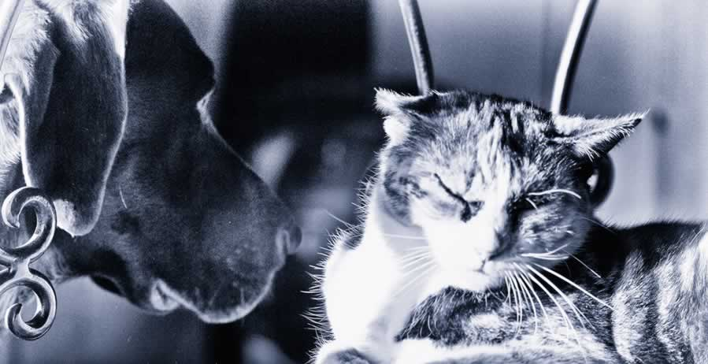

L'expression "comme chien et chat" n'est pas née par hasard. C'est avant tout parce que ces deux animaux ne s'entendent pas très bien...

Le cheval est un grand mammifère herbivore et ongulé à sabot unique ;
c'est l'une des espèces de la famille des Équidés, lesquelles ont évolué,
au cours des derniers 45 à 55 millions d'années,
à partir d'un petit mammifère possédant plusieurs doigts.
Voir la source
Le lapin est un petit animal très attachant et plein de tendresse domestiqué depuis le Moyen-Âge.
Il peut vivre entre 6 et 13 ans et peser de 1kg à 10kg. Sa santé fragile nécessite de connaître
les maladies les plus répandues et les précautions à mettre en oeuvre lors de son adoption à la maison.
Malgré qu'il soit devenu un animal domestique au fil des années,
le lapin n'as pas pour autant perdu certaines caractéristiques physiques et son comportement sauvage.
Éduquer votre lapin vous permettra de limiter certains comportements non souhaités à la maison.